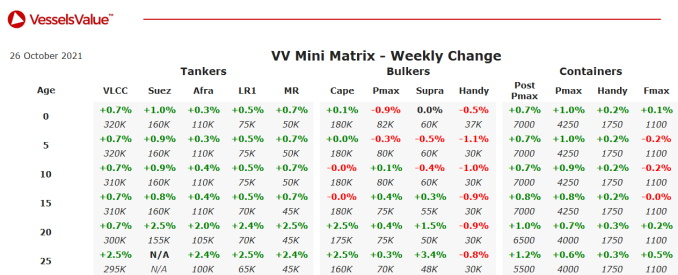

inWeekly Vessel Valuations Report26/10/2021

Tanker:Tanker values have firmed.
VLCC Gilos (319,200 DWT, Oct 2004, Hyundai Samho Heavy Ind) sold to Egyptian buyers for USD 31.00 mil, VV value USD 29.50 mil.
Bulker:Handy Bulkers values have softened
Panamax Bei Lun Hai 9 (69,700 DWT, Feb 1989, Imabari) sold to Chinese buyers for USD 4.70 mil, VV value USD 5.87 mil – At Auction.
Ultramax Kanoura (61,400 DWT, Mar 2013, Iwagi Zosen) sold for USD 28.40 mil, VV value USD 28.22 mil – BWTS fitted.
Supramax Pacific 08 (52,500 DWT, Sept 2004, Tsuneishi Zosen) sold to Chinese buyers for USD 15.50 mil, VV value USD 14.88 mil.
Handy Bulker Royal Justice (37,000 DWT, Dec 2012, Saiki) sold to Asian buyers for USD 22.00 mil, VV value USD 22.18 mil – BWTS fitted.
Handy Bulker Dory (34,500 DWT, Nov 2010, SPP) sold for USD 16.20 mil, VV value USD 16.84 mil.
Handy Bulker Global Passion (33,700 DWT, Jan 2011, Shin Kochi) sold for USD 17.50 mil, VV value USD 17.89 mil – BWTS fitted.
Handy Bulker Queen Asia (28,400 DWT, Sept 2011, I-S) sold for USD 15.50 mil, VV value USD 15.52 mil – BWTS fitted.
Container:Modern Panamax values have firmed.
Sub Panamax Irenes Respect (2,824 TEU, Feb 2006, Hyundai Mipo) sold for USD 43.00 mil, VV value USD 41.05 mil – SS passed.
Handy AS Federica (1,284 TEU, May 2007, Zhejiang Ouhua) sold for USD 23.00 mil, VV value USD 22.46 mil.
Handy AS Faustina (1,284 TEU, Sep 2007, Zhejiang Ouhua) sold for USD 23.00 mil, VV value USD 22.62 mil.
Feedermax Stefan Sibum (1,036 TEU, Jan 2009, SSW Fahr) sold for USD 21.50 mil, VV value USD 19.17 mil.
Feedermax Grete Sibum (1,036 TEU, Mar 2008, SSW Fahr) sold for USD 20.10 mil, VV value USD 18.14 mil – DD passed.
